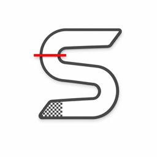

SektorLast updated: 25 October 2026
By installing and using Sektor, you accept these terms. They are short on purpose.
Sektor is an app for iPhone and Android that imports and analyses karting sessions: lap times, telemetry, comparison between pilots, races and championships. It is a training aid, and nothing more.
Sektor is not an official timing system. Times come from the GPS of the device that recorded the session — a GoPro, a RaceBox, another lap timer — and do not have the accuracy of a transponder system. They must not be used to decide official results, bets, or any situation where the accuracy of the time has consequences.
Nor is it a safety device or a driving aid. Never handle your phone or your recording equipment while driving. Set it up before you go on track and only touch it again once you have stopped.
An account is needed to use the app. You are responsible for keeping your password safe and for everything that happens through your account. If you suspect unauthorised access, change your password and let us know.
You must be at least 13 years old to create an account.
The sessions you import, the names you choose, the notes you write and the videos you attach remain yours. When you switch on a share — leaderboards, races, shared sessions — you give us only the technical permission needed to show that content to the people you chose, and only while the share is active.
The app has parts where other people see you: leaderboards, pilot profiles, invitations and shared races. In those parts, you may not:
Any user can block another — no longer seeing them or being contactable by them — and report abusive behaviour, from the public profile, the leaderboard or a friend request. Reports are reviewed and may lead to content being removed or the responsible account being closed.
The app is free and includes two real sample sessions and a sample race, with every paid feature open, so you can try them before deciding.
There are four possible purchases, processed by the store you installed the app from — the App Store on iPhone, or Google Play on Android:
Payment is charged by the store, to your Apple ID or your Google account. A subscription renews automatically unless you cancel it at least 24 hours before the end of the current period. Refunds are handled exclusively by the store you bought from, under the App Store's or Google Play's rules — we have no way of processing refunds directly.
What you buy is linked to your Sektor account and is valid in both versions of the app. Managing, cancelling or requesting a refund for a purchase is always done in the store where it was made. Deleting your account does not cancel a subscription: cancel it in the store first.
Cancelling a subscription does not remove what you bought individually: permanent unlocks and those obtained during a pass remain yours.
This is an independently developed app. We do our best to keep it working, but we do not guarantee continuous availability of the server or freedom from errors. Features may change or disappear between versions.
The local part of the app — importing and analysing on your phone — works with no network, and keeps working even if the server is unavailable.
To the maximum extent permitted by law, we are not liable for damage resulting from use of the app, including loss of data, decisions made on the basis of the times shown, or any incident on track. Keep copies of what matters to you.
Nothing in these terms removes the rights that Portuguese and European law give you as a consumer.
You can delete your account at any time, inside the app (Account → your name → Delete account) or by email — see Delete your account. It is permanent. We may close accounts that seriously or repeatedly break the rules in section 5.
These terms are governed by Portuguese law. As a consumer in the European Union, you can use the European Commission's Online Dispute Resolution platform.
The product and brand names mentioned in the app, such as GoPro, RaceBox, VBOX, RaceChrono, Circuit Tools and Slopes, belong to their respective owners and are used only to indicate which files and devices the app is compatible with. Sektor is not affiliated with or endorsed by any of them.
The 3D kart model is "Racing Kart 125cc (low poly)" by oneshinomori, under the Creative Commons Attribution 4.0 licence, modified for the app. The layout of catalogue tracks is derived from OpenStreetMap data (© OpenStreetMap contributors, ODbL).